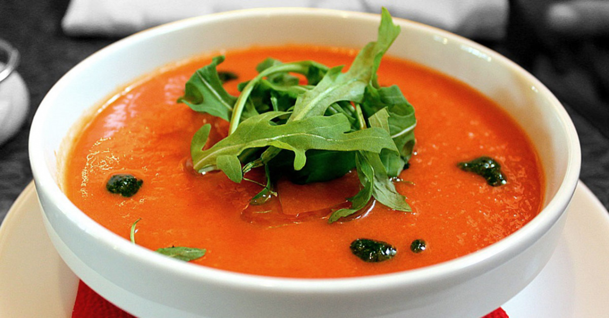
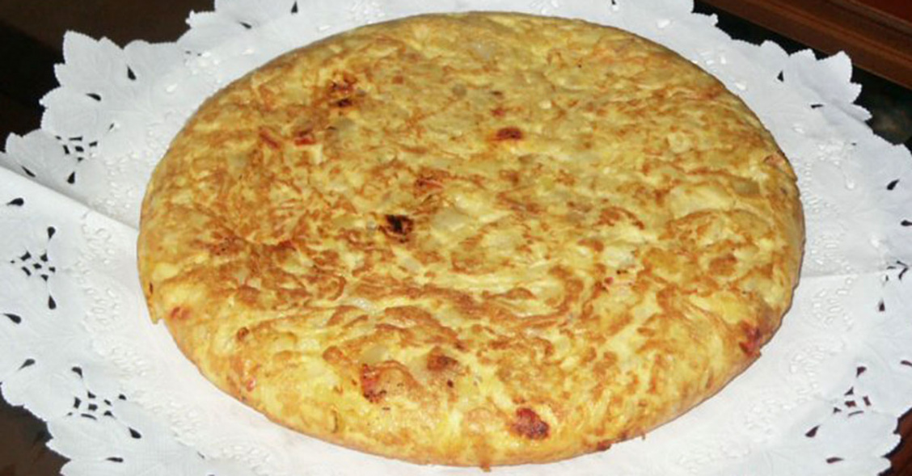
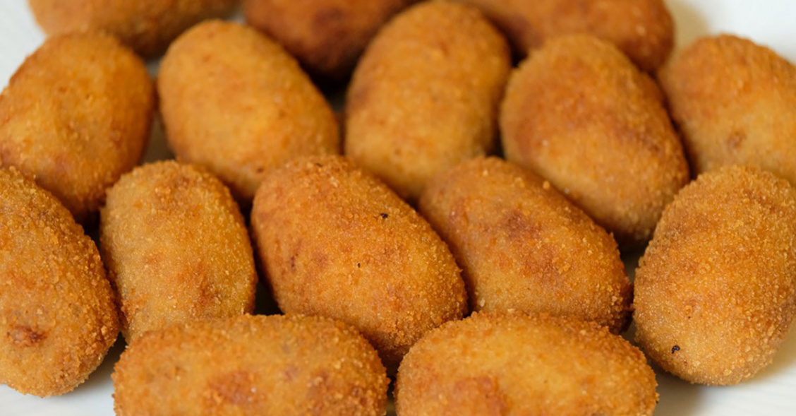

Während der heißen Sommer in Andalusien in Südspanien entstanden diese beiden kalten Suppen aus rohem Gemüse. Der etwas bekanntere Gazpacho wird aus Tomaten, Gurken, Paprika, Zwiebeln und Essig hergestellt. Der für Cordoba typische Salmorejo ist dickflüssiger und wird aus Knoblauch, Tomaten, Olivenöl und Semmelbröseln zubereitet und mit Schinkenwürfeln, gekochten Eiern oder gerösteten Brotcroutons serviert.
Die Tortilla ist die unumstrittene Königin der spanischen Küche. Sie wird im ganzen Land serviert und ist für jeden Geschmack geeignet. Gleichzeitig ist sie ein perfektes Beispiel für die Schlichtheit und Exklusivität der spanischen Küche. In ihrer einfachsten Variante wird sie aus Bratkartoffeln zubereitet, die mit einem geschlagenen Ei vermischt und bis zum Aushärten des Eies in der Pfanne gekocht werden. Oft wird der Tortilla auch Zwiebel hinzugefügt, je nach Geschmack.
Kroketten sind eines der vielseitigsten Gerichte Spaniens, da sie mit fast allen Zutaten zubereitet werden können, obwohl sie meist aus Iberico-Schinken, Huhn und Kabeljau hergestellt werden. Es handelt sich um eine Art dickflüssige Béchamelsauce, die mit Zwiebeln und einer anderen Hauptzutat vermischt wird. Anschließend wird die Masse gerollt und in Stücke geschnitten, paniert und frittiert. Unter den spanischen aperitivos sind die Kroketten der Klassiker schlechthin.
Die spanischen Museen beherbergen einige der wichtigsten Sammlungen der Welt, mit außergewöhnlichen Stücken und Meisterwerken. Um Künstler wie Velázquez, Goya, Dalí, Miró oder Picasso kennen zu lernen, ist es außerdem unerlässlich, diese zu besuchen. In Madrid bietet der Paseo del Arte, der aus dem Prado-Museum, dem Thyssen-Bornemisza und dem Nationalmuseum Reina Sofia besteht, eine Reise durch die Kunstgeschichte bis in die Gegenwart. Zeitgenössische Kunst ist der Mittelpunkt in Zentren wie dem Guggenheim Museum Bilbao, dem MACBA in Barcelona, dem IVAM in Valencia oder dem Centre Pompidou Málaga, unter anderem; außerdem in zahlreichen Kunstgalerien und alternativen Kulturräumen, vor allem in Madrid und Barcelona. Die Picasso-Museen in Málaga und Barcelona sind unumgängliche Stationen, um in die Welt von Pablo Picasso einzutauchen ... Dies sind nur einige Beispiele einer langen Liste, die jedes Jahr Millionen von Besuchern anlockt, denn in Spanien gibt es fast 1.500 Museen und Sammlungen aller Art, von denen viele als Maßstab in ihrer Kategorie herausragen.
Spanien überrascht auch mit seinen avantgardistischen Bauwerken. Es handelt sich um Gebäude, Konstruktionen und zeitgenössische architektonische Räume, die von renommierten Architekten entworfen wurden und Ästhetik mit Funktionalität verbinden. Es gibt Museen und Kulturzentren wie das Guggenheim Bilbao (Frank Gehry), die Stadt der Künste und Wissenschaften in Valencia (Santiago Calatrava), das MUSAC in León (Tuñón & Mansilla), das Botín-Zentrum (Renzo Piano), das Niemeyer-Zentrum (Óscar Niemeyer) oder die Erweiterungen des Prado-Museums (Rafael Moneo) oder des Reina Sofía (Jean Nouvel), um nur einige zu nennen. Erwähnenswert sind auch Konzertsäle und Veranstaltungsorte wie der Palau de Sant Jordi (Arata Isozaki) oder der Kursaal (Rafael Moneo); Weinkellereien wie der Marqués de Riscal-Komplex (Frank Gehry) oder die Bodegas Ysios (Santiago Calatrava); oder öffentliche Bereiche wie der Metropol Parasol (die beliebten "Pilze" von Sevilla) oder das T4-Terminal des Flughafens Madrid-Barajas Adolfo Suárez.
Unter den vielen Kulturwegen, die man in Spanien absolvieren kann, gibt es einen, der mit seinem eigenen Namen hervorsticht: der Jakobsweg. Der älteste Pilgerweg Europas zieht Jahr für Jahr tausende Reisende aus aller Welt an und gehört zum UNESCO-Weltkulturerbe. Eine weitere großartige Kulturroute ist die Silberstraße (Vía de la Plata), die von Süden nach Norden auf der Route der gleichnamigen alten Römerstraße verläuft. Auch die Routen des maurischen Vermächtnisses, die vom beeindruckenden Erbe von al-Andalus erzählen. Darüber hinaus gibt es viele weitere Routen, auf denen Sie den historischen und künstlerischen Reichtum Spaniens entdecken können. Ein umfangreicher Katalog, zu dem auch etwa zwanzig Kulturreisen des Europarates gehören.
Im Laufe der Geschichte haben viele Spanier in Kunst und Kultur ihre Spuren hinterlassen (Murillo, Zurbarán, Miró, Sorolla, Maruja Mallo, Cervantes, Lorca, Falla, Buñuel, Balenciaga, Ramón y Cajal ...). Etwas, was auch heute noch passiert. Antonio López, Miquel Barceló, Paco de Lucía, Camarón de la Isla, Montserrat Caballé, Pedro Almodóvar, Blanca Li, Manuel Pertegaz, Severo Ochoa, Margarita Salas oder Ana María Matute sind nur einige Beispiele für eine lange Liste von Männern und Frauen, die sich der Literatur, der Malerei, der Musik, dem Kino, der Mode, dem Tanz, der Wissenschaft und allen Arten von Kunst verschrieben haben und deren Ansehen und Anerkennung über die Grenzen hinausgehen.